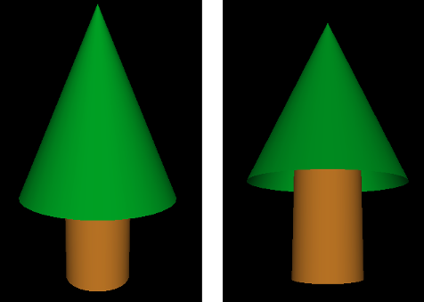

CS 424: Computer Graphics, Fall 2021
Lab 4: First Work in 3D
This is our first lab on 3D graphics. You will be working with OpenGL 1.1, drawing and transforming simple shapes. You can work either in Java or in JavaScript.
If you use JavaScript, you will need copies of the three files in /classes/cs424/lab4-files-js. Or you can get the files here: First3D.html, glsim.js, and basic-object-models-IFS.js. You will only make changes to First3D.html, but that program depends on the two JavaScript files. No special setup is needed for the JavaScript version.
If you use Java, you will need copies of the two files in /classes/cs424/lab4-files-jogl. Or you can get the files here: First3D.java and Camera.java. You will only make changes to First3D.java, but that program depends on Camera.java.
To program in Java, you will need to use the JOGL API, an implementation of OpenGL for Java. See Subsection 3.6.2 for instructions on doing that in Eclipse. The basic idea is to make a "User Library" containing the JOGL two .jar files, jogl-all.jar and gluegen-rt.jar. Then you can start a new project and add the JOGL user library to the project. There are copies of the JOGL .jar files and the native libraries for Linux in /classes/cs424/JOGL. (Note: There is no need to make copies of these files, if you are using them on Linux. Your User Library can can refer directly to the copies in /classes/cs424/JOGL.) You can also get copies of the .jar files and the native libraries for Linux, Windows, or Mac from https://math.hws.edu/eck/cs424/jogl_2_4_support/. Be sure to read all the instructions in the textbook and follow them carefully! Note that it is also possible to compile and run JOGL programs on the command line by adding appropriate options to the javac and java commands.
Turning in your work: Your completed program should be submitted by the beginning of the lab period next Thursday. You can turn in a folder containing all of the required files, or you can just submit the file that you worked on, First3D.java or First3D.html.
The Assignment
When the program for this lab is complete, it will be able to draw six 3D objects (although one of the objects is a flat 2D object that lies in a plane). You just need to complete the draw() subroutine, which is called whenever the scene needs to be redrawn. The draw() subroutine will draw just one of the objects; which one it draws will depend on the value of the global integer variable objectNumber, which can be 1, 2, 3, 4, 5, or 6. The six objects that you have to draw are described below.
You only need to work in the section of the program that is labeled "TODO: Complete this section!". You don't need to understand the rest of the program.
The program contains empty subroutines named bar(), square(), and cage() for drawing three of the objects. This is hierarchical modeling: bar() will be used to write square(), and square() will be used to write cage(). You can write subroutines for the other three objects, if you want to, but that is not required.
The user will select the object to be drawn by pressing the number keys 1, 2, 3, 4, 5, and 6 on the keyboard. The user can rotate the scene by dragging on it with the mouse. Pressing the Return or Home will restore the original point of view. You don't have to implement any of that. It's already done by the program.
We have not yet covered a lot of things that are necessary for
realistic-looking 3D scenes. To avoid disappointing you with the look of the scenes
in this lab, the starter files do some setup in their initialization subroutines
that you are not expected to understand. In particular, they set up a
perspective projection and turn on some basic lighting effects. And they
turn on the option GL_COLOR_MATERIAL, which makes the colors
set by glColor* functions act like correctly lit material so that the
objects are shaded correctly.
OpenGL and GLUT Functions
You will use the OpenGL glColor* functions for setting the color of objects. You will need the transformation functions glRotated, glScaled, and glTranslated for applying transformations, and glPushMatrix and glPopMatrix for saving and restoring the current transformation.
(Note that for JOGL, all the OpenGL functions are implemented as methods in a graphics context object,
which is named gl2 in the program. That is, all the names must be preceded by
"gl2.". For example, gl2.glColor3d(1,0,1). Furthermore OpenGL constants are defined in the
class GL2, so they have names like GL2.GL_TRIANGLES.
For two of the objects, you will use glBegin, glEnd, and glVertex*. The other four objects will be constructed out of basic shapes using transformations. To draw the basic shapes, you will use three functions from the GLUT library: glutSolidShpere(), glutSolidCylinder(), andglutSolidCone(). (For JavaScript, you will actually be using simulated GLUT functions, defined in the program). These GLUT functions are discussed below, when they are needed.
Object Number 1: A 2D Shape
Object number 1 is a simple 2D shape, which you should draw directly, using glBegin(), glEnd(), glVertex*(), and glColor*. Use different colors for different vertices. Here is the shape, with the vertices labeled:
It is possible to make this shape using a single primitive of type either GL_TRIANGLE_FAN or GL_TRIANGLE_STRIP.
Object Number 2: Wireframe Polyhedron
This exercise is as much about understanding arrays as it is about OpenGL drawing. You might want to leave it for later so that during the lab you can concentrate on using 3D transformations for the next four objects.
Object number 2 is a wireframe polyhedron. That is, you will just draw the edges of the polyhedron. The particular polyhedron is called a stellated dodecahedron. It has 60 triangular faces. The data for the polyhedron is already in the program, in two large two-dimensional arrays named dodecVertices and dodecTriangles. You should find those arrays and take a look at them!
The first array, dodecVertices, contains the (x,y,z) coordinates of the vertices of the polyhedron. For example, vertex number 13 has coordinates
(dodecVertices[13][0], dodecVertices[13][1], dodecVertices[13][2])
You can use these coordinates in the function glVertex3d(x,y,z), or you can use the entire array in glVertex3dv(array). (In Java, remember, the functions are gl2.glVertex3d(x,y,z) and gl2.glVertex3dv(array,0).)
The second array, dodecTriangles, is a 2D array of integers. Each row of the array contains three integers, giving the vertex numbers for the vertices of one of the triangular faces of the polyhedron. That is, the integers in dodecTriangles are indices into the vertex array. For example, The three vertices of face number 7 have vertex numbers dodecTriangles[7][0], dodecTriangles[7][1], and dodecTriangles[7][2]. These vertex numbers are row numbers in the dodecVertices array.
Your job is to draw the outline of each of the 60 triangular faces. You can do that by drawing each face separately as a primitive of type GL_LINE_LOOP. Using the two arrays can easily get confusing. When processing face number i, I suggest that you give names to the vertex numbers for that face. For example,
int b = dodecTriangles[i][1]; // Index in dodecVertices for vertex 1 of face i.
(If you still find this confusing, you can look ahead at the discussion of "Indexed Face Sets" in Subsection 3.4.1. But remember that here you are drawing the edges, not the faces, of the polyhedron.)
Important Note: A wireframe should be drawn with lighting effects turned off! To implement that, you should use the command
glDisable(GL_LIGHTING); // or gl2.glDisable(GL2.GL_LIGHTING) in Java
before you draw the polyhedron, and
glEnable(GL_LIGHTING); // or gl2.glEnable(GL2.GL_LIGHTING) in Java
after you draw the polyhedron.
(One more note: The initialization subroutine calls glLineWidth(3), to make lines 3 pixels wide. The stellated dodecahedron is the only shape that uses lines, so this setting only applies to that shape. The wider lines make the shape more distinct.)
Stellated Dodecahedron Wireframe, rotated
Object Number 3: A Simple Tree
Object number 3 is a very simple example of using GLUT and transforms. This is just a warm-up for the remaining objects. The third object is a solid, 3D object that consists of a green cone sitting on top of a brown cylinder, meant to look a little like a tree. Here are two pictures of the tree in slightly different orientations so that you can see that cone actually has no bottom (which is unfortunate, but we will put up with it):

The cone and the cylinder can be drawn using the GLUT library:
glutSolidCylinder( radius, height, 32, 8 ); glutSolidCone( radius, height, 32, 8 );
In Java, the method names will be glut.glutSolidCylinder and glut.glutSolidCone. The first two parameters specify the size of the object. The last two are "slices" and "stacks" and determine how smooth the curved surfaces will be; the values 32 and 8 are fine for this lab.
For this example, my cone has radius 3.5 and height 8, my cylinder has radius 1.5 and height 5, and the cylinder sticks 1 unit into the interior of the cone.
If no transformation is applied, both the cone and the cylinder are drawn with the center of their bases at (0,0,0) and with their axes lying along the positive z-axis (that is, pointing directly out of the screen). So, if you just use the above commands, the cone and cylinder will be in the same location! Obviously, you will need to apply a transformation. In the end, the complete object should have its center approximately at (0,0,0) for proper display. It will still be pointing directly at you, so you will have to apply a transformation to rotate it into a vertical orientation on the screen.
Don't forget to use glPushMatrix() and glPopMatrix(), as necessary, to limit the effect of the transformations that you apply!
Objects Number 4, 5, and 6: Build a Cage
Objects number 4, 5, and 6 are stages in building a "cage" out of cylinders and spheres. The cage, object number 6, has eight spheres at the vertices of a cube. The centers are the points (-4,-4,-4), (-4,-4,4), (-4,4,-4), etc. There is a narrow cylinder lying along each edge of the cube. You should use a different color for the cylinders than you use for for the spheres. Note that a sphere can be drawn using the GLUT function
glutSolidSphere( radius, 32, 32 );
or glut.glutSolidShpere for Java. The center of the sphere is at (0,0,0). The first parameter is the radius. The other two parameters are, again, "slices" and "stacks"; you can use the value 32 for this lab.
Object number 4 is a "bar" consisting of a cylinder with a sphere at each end. The cylinder lies along the x-axis, and the centers of the spheres are at (-4,0,0) and (4,0,0):
You should complete the bar() subroutine to draw this object. Note that for Java, the graphics context, gl2, is a parameter to the subroutine.
Object number 5 is square shape that can be made out of two translated copies of the bar, plus two additional cylinders. The square lies in the xy-plane, and the centers of the four spheres are at (-4,4,0), (4,4,0), (-4,-4,0), and (4,-4,0). (Do not make the square out of four bars — that would actually contain eight spheres, not four.) This is to be drawn by the square() subroutine:
Finally, object number 6 is the full cage, which can be made from two translated copies of the square, plus four additional cylinders. It should be centered at (0,0,0):
Here, by the way is what happens to the cage when lighting is turned off, and the colors are treated as simple color rather than material Simple color looks completely flat. There is none of the shading that comes from the interaction of light with material. The picture barely looks 3D at all. Your brain might still try to interpret it as 3D because the smaller size of some spheres makes them look farther away and because similar line drawings are often used to represent cubes,